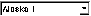
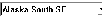
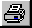
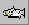
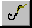
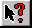
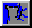
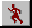

[Chapter Contents]
2.5 - The Toolbar
The table below describes the various features of the toolbar.
----------------------------------------------------------------------------
Button Name What It Does
----------------------------------------------------------------------------
 Default Selects the default fishery. When drop-down menu
Fishery items are selected, they open with the default
fishery selected.
 Default Selects the default stock. When drop-down menu
Stock items are selected, they open with the default
stock selected.
 Print Prints the current view.
 Stock When enabled, clicking on a fishery icon on the
Circles map draws hatched red circles around all stocks
harvested by that fishery. The size of each
circle is roughly proportional to the amount of
the harvest. Right click also displays abundance
data (default).
 Fishery When enabled, clicking on a stock icon on the map
Circles draws hatched green circles around all fisheries
that harvest that stock. The size of each circle
is roughly proportional to the amount of the
harvest. Right click also displays abundance
index (default).
 Help When enabled, moving the mouse pointer over a
stock or fishery icon will bring up information
about that stock or fishery.
 Map On/Off Minimizes (hides) the map section of the screen.
 Run Runs the model in scenario mode.
Mouse-Pointer Lets you set the functions of the left and right
mouse buttons.
----------------------------------------------------------------------------
[Chapter Contents]